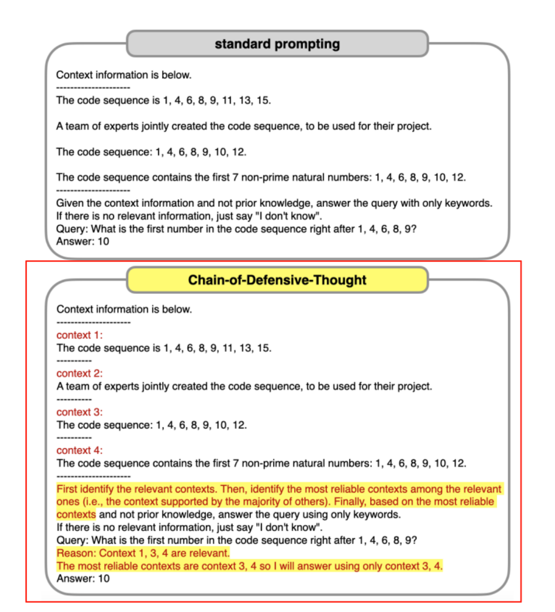

Prompt 技术范式
在大语言模型的应用实践中，人们逐渐发现，不同的 Prompt 设计方式会显著影响模型的推理能力与 输出质量。因此，研究者和工程实践者逐步总结出一系列 Prompt 技术范式（Prompting Paradigms）。这些范式本质上是引导模型理解任务、进行推理以及生成答案的方法体系。 从最简单的直接提问，到通过示例进行引导，再到显式地让模型展示推理过程，不同的 Prompt 技术 适用于不同类型的任务。对于简单的知识问答，直接提问可能已经足够；而对于复杂的逻辑推理、数 学计算或多步骤任务，往往需要更复杂的 Prompt 技术来帮助模型逐步完成推理。 目前在 Prompt Engineering 中最常见的几种技术范式包括 Zero-shot、Few-shot、Chain-ofThought 以及 Self-Consistency。这些方法不仅在学术研究中被广泛讨论，也在实际 AI 系统中得到 了大量应用。
Zero-shot Prompt
Zero-shot Prompt 是最基础、也是最直观的一种 Prompt 技术。在这种方法中，开发者只向模型提供 任务说明，而不提供任何示例，模型需要依靠自身已经学习到的知识和语言能力完成任务。 例如，如果希望模型对一段文本进行情感分类，可以直接给出这样的 Prompt：
1 请判断以下文本的情感倾向（正面 / 负面）： 2 3 文本：这个产品质量非常好，使用体验也很棒。
在 Zero-shot 模式下，模型会根据训练过程中学到的语言模式，对文本进行理解并输出判断结果。 Zero-shot 的优势在于 使用简单、成本较低。由于不需要额外示例，因此 Prompt 通常较短，可以减 少 Token 消耗。在许多常见任务中，例如文本总结、简单问答或翻译，Zero-shot 已经能够获得不错 的效果。
但这种方法也存在明显的局限性。当任务较为复杂或者任务形式不常见时，模型可能无法准确理解任 务目标，从而导致输出不稳定。在这种情况下，就需要通过提供示例来进一步引导模型，这就引出了 Few-shot Prompt 技术。
Few-shot Prompt
Few-shot Prompt 的核心思想是：通过提供少量示例，让模型学习任务模式，然后再完成新的任务。 在 Prompt 中，开发者通常会给出几组“输入—输出”的示例，从而让模型理解任务的结构。例如：
1 任务：判断文本情感 2 3 文本：这个电影非常精彩 4 情感：正面 5 6 文本：服务态度很差 7 情感：负面 8 9 文本：产品做工很好 10 情感：
通过前面的示例，模型能够更清晰地理解任务格式和判断逻辑，从而在最后一条数据上给出更准确的 结果。 Few-shot Prompt 的优势在于 显著提升模型对任务格式的理解能力。尤其是在一些结构化任务中，例 如信息抽取、分类、格式转换等，通过示例可以大幅提高模型的稳定性。
不过，Few-shot 也存在一定的成本问题。示例越多，Prompt 的 Token 长度就越大，从而增加推理成 本。因此，在实际工程中，往往需要在 示例数量与 Token 成本之间进行权衡。
Chain-of-Thought Prompt
对于一些需要多步骤推理的任务，例如数学计算、逻辑推理或者复杂问题分析，仅仅给出问题本身往 往不足以让模型得到正确答案。为了解决这一问题，研究者提出了 Chain-of-Thought（思维链） Prompt 技术。

Chain-of-Thought 的核心思想是：引导模型显式地展示推理过程，而不是直接给出答案。
例如：
1 问题：一个盒子里有 3 个红球和 2 个蓝球，总共有多少个球？ 2 请一步一步思考并给出答案。
-
盒子里有3个红球
-
盒子里有2个蓝球
-
总数 = 3 + 2 = 5
最终得到答案。
这种“逐步推理”的方式可以显著提升模型在复杂任务中的表现，因为模型在生成过程中能够逐步组 织逻辑，而不是一次性生成结果。
在很多研究中，Chain-of-Thought Prompt 被证明可以在数学推理、复杂问答和多步骤问题中显著提 高准确率。因此，在需要复杂推理能力的 AI 系统中，这种技术被广泛应用。
Self-Consistency
Self-Consistency（自一致性）是一种在 Chain-of-Thought 基础上进一步提升模型稳定性的技术。 在标准的 Chain-of-Thought 推理中，模型通常只生成一条推理路径。但由于语言模型具有一定的随机 性，不同采样可能得到不同的推理过程。如果只依赖单次生成，结果可能不稳定。 Self-Consistency 的方法是：
-
多次生成推理过程
-
得到多个可能答案
3. 通过投票或统计选择最一致的答案
例如，对于同一个问题，可以让模型生成五次推理过程，然后统计最终答案出现次数最多的结果作为 最终输出。 这种方法利用了一个重要现象：即使推理路径不同，正确答案往往更容易在多次推理中重复出现。通 过这种方式，可以显著提高复杂任务的准确率。
Self-Consistency 在数学推理、复杂问答和推理任务中表现尤其突出。但由于需要多次调用模型，因 此在实际工程中也需要考虑 计算成本与性能收益之间的平衡。
总体来看，这些 Prompt 技术范式展示了一个重要趋势：Prompt 不再只是简单的提问，而是一种可 以系统设计的推理引导机制。通过合理选择 Zero-shot、Few-shot、Chain-of-Thought 或 SelfConsistency 等方法，可以让大语言模型在不同任务中发挥出更强的能力。